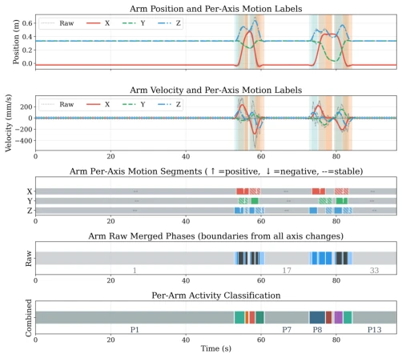
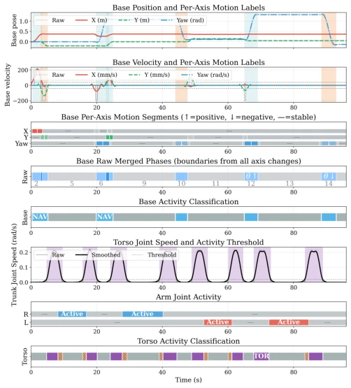
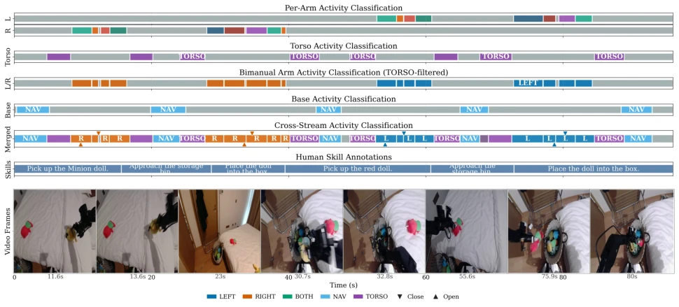
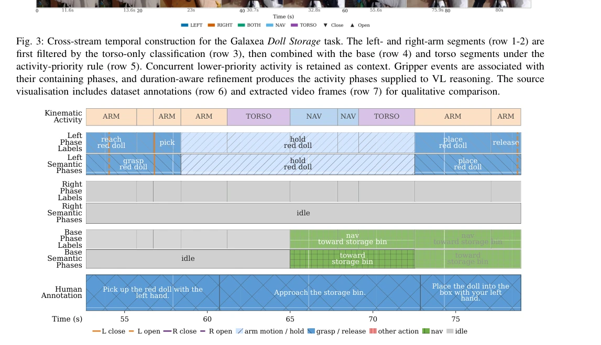
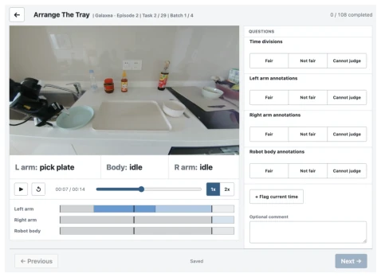
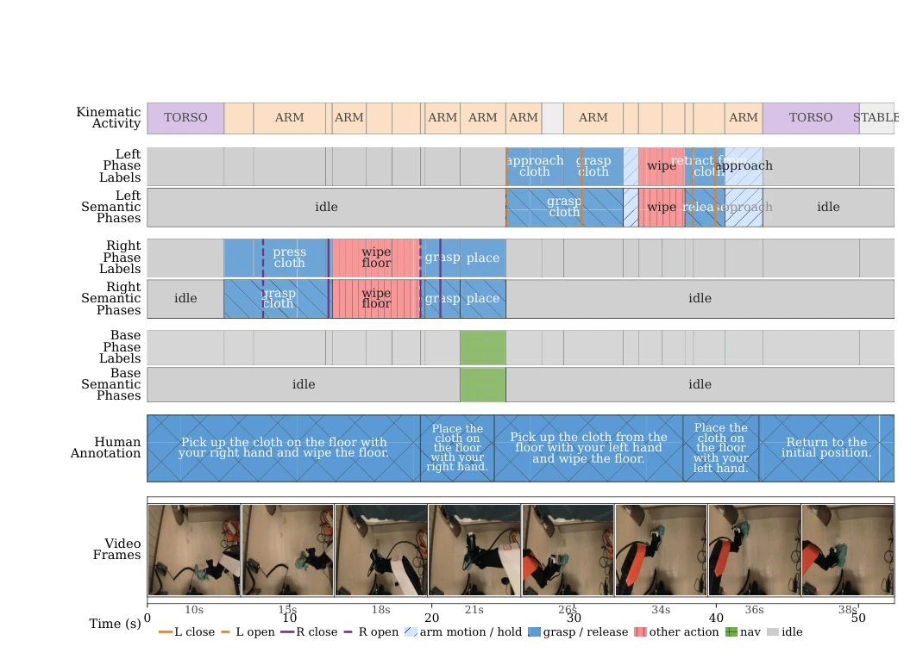
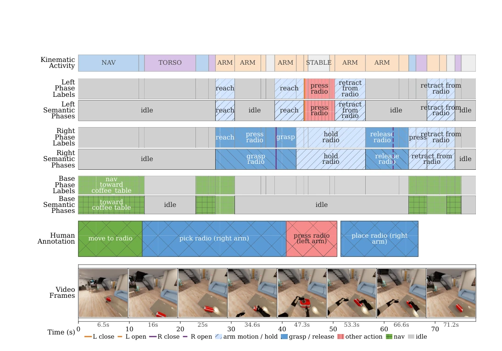

This paper attempts to solve the difficulty of annotating dual-arm mobile manipulation using a "Frankenstein-like" hybrid scheme of "physical motion detection + visual language model". Although the idea is not fresh, it prevails in being pragmatic. The highlight lies in cleverly avoiding the pitfall of inaccurate timing in pure visual localization, utilizing kinematic signals to lock the timeline, and then letting the VL model only be responsible for "describing what is seen". This division of labor is indeed more reliable than an end-to-end black box. However, the author's blind confidence in VL model stability is worth criticizing: although claiming 87.4% consistency, verb descriptions still fluctuate significantly, and in human evaluation, the acceptance rate of arm action labels is only 78.7%, indicating that "describing what is seen" still easily suffers from "hallucinations" or "inadequate expression" in complex dual-arm interactions. Furthermore, the robustness of this method for manipulating deformable objects (such as folding clothes) is questionable, after all, pure vision plus simple kinematics makes it difficult to distinguish subtle contact force changes. Overall, this is a qualified engineering attempt, but still far from "fully automatic perfect annotation". Do not expect it to replace human experts' judgment in complex scenarios.
Long-horizon operation demonstrations contain concurrent motions, and their temporal organization and semantic interpretation are crucial for policy learning. Existing dense subtask annotations usually rely on manual labor, which is time-consuming and resource-intensive. Existing automatic annotation methods have obvious shortcomings: kinematic heuristic-based methods, while precise in temporal localization, have narrow semantic coverage and are highly dependent on specific tasks (as described in [3]); while pure visual language (VL) reasoning is semantically rich, it struggles to precisely determine the temporal boundaries of events (as described in [4]). This contradiction of "either accurate but unaware, or aware but inaccurate" makes it difficult to automatically generate annotations that possess both temporal accuracy and rich semantics. This paper aims to solve this bottleneck by combining the temporal localization capability of deterministic trajectory analysis with the semantic breadth of VL reasoning, providing high-quality context for long-horizon policies, thereby supporting the training of methods such as hierarchical diffusion policies [1] and visual language action models [2].
方法Method
本文提出了一套自动标注流水线，核心逻辑是“物理定时间，视觉定内容”。整体流程分为三个阶段：首先是运动学轨迹分割，其次是相位局部化的VL推理，最后是流内语义聚合。具体而言，第一阶段利用运动学启发式算法（如Savitzky-Golay滤波、差分、移动平均）对机械臂、移动底盘、躯干和夹爪信号进行分割，生成方向感知的运动片段，并通过优先级规则（ARM > TORSO > NAV > STABLE）融合多流信号，解决并发运动的时间对齐问题。第二阶段，将分割好的相位输入VL模型（如GPT-5.5），利用多视图视频采样（左手、头部、右手）和固定提示词，描述每个相位内的视觉内容，包括动作动词、目标物体和事件类型。第三阶段，对生成的三个独立流（底盘、左臂、右臂）进行语义聚合，合并相邻且语义兼容的相位（如将“接近”与“抓取”合并），并引入保守规则修正VL模型的潜在错误（如将模糊的“按压”修正为“接近”）。这种设计既保留了运动学的时序精度，又利用了VL的语义泛化能力，同时通过独立流聚合保留了双臂异步行为的特性。
This paper proposes an automatic annotation pipeline, with the core logic being "physics determines time, vision determines content". The overall process is divided into three stages: first, kinematic trajectory segmentation; second, phase-localized VL reasoning; and finally, intra-stream semantic aggregation. Specifically, the first stage utilizes kinematic heuristic algorithms (such as Savitzky-Golay filtering, differencing, moving average) to segment signals from the robotic arm, mobile base, torso, and gripper, generating direction-aware motion segments, and fusing multi-stream signals through priority rules (ARM > TORSO > NAV > STABLE) to solve the temporal alignment problem of concurrent motions. In the second stage, the segmented phases are input into a VL model (such as GPT-5.5), utilizing multi-view video sampling (left hand, head, right hand) and fixed prompts to describe the visual content within each phase, including action verbs, target objects, and event types. In the third stage, semantic aggregation is performed on the three generated independent streams (base, left arm, right arm), merging adjacent and semantically compatible phases (such as merging "approach" with "grasp"), and conservative rules are introduced to correct potential errors of the VL model (such as correcting vague "press" to "approach"). This design retains the temporal accuracy of kinematics while leveraging the semantic generalization capability of VL, and simultaneously preserves the characteristics of dual-arm asynchronous behavior through independent stream aggregation.

Fig. 1: Direction-aware Cartesian arm segmentation for the Galaxea Doll Storage task. Position signals are first smoothed and differentiated (row 1). Then signed velocity thresholds label positive, negative, and stable motion on the three Cartesian axes (row 2-3). Per-axis boundaries are unified into multi-axis segments (row 4), and compatible interruptions are bridged to form the final arm segments (row 5).

Fig. 2: Base and torso segmentation for the Galaxea Doll Storage task. Base translation and yaw pass through signed segmentation (row 1-3). Then segments are merged and labelled (row 4-5). Separately, torso speed is compared with the displayed right- and left-arm joint activity to identify torso-only segments (row 6-8). The resulting NAV and TORSO segments are used in the subsequent cross-stream combination.

Fig. 3: Cross-stream temporal construction for the Galaxea Doll Storage task. The left- and right-arm segments (row 1-2) are first filtered by the torso-only classification (row 3), then combined with the base (row 4) and torso segments under the activity-priority rule (row 5). Concurrent lower-priority activity is retained as context. Gripper events are associated with their containing phases, and duration-aware refinement produces the activity phases supplied to VL reasoning. The source visualisation includes dataset annotations (row 6) and extracted video frames (row 7) for qualitative comparison.

Fig. 4: Phase-localised VL description and within-stream semantic aggregation for the Galaxea Doll Storage excerpt. Kinematic activity phases are feeded into VL calls (row 1); raw left-arm, right-arm, and base descriptions are then aggregated independently (row 2, 4, 6). Aggregation merge the individual descriptions into a unified semantic representation (row 3, 5, 7). The reference rail is qualitative context rather than a construction input (row 8).
The study was evaluated on the Galaxea dual-arm mobile manipulation dataset, containing 29 real tasks, with 3 demonstrations per task. The experiment first tested the stability of VL reasoning, repeating three times under the same input, finding that 87.4% of phase outputs were completely consistent, and object ownership and event types were highly stable, but free verb descriptions exhibited fluctuations. Subsequently, the acceptability of time partitioning and semantic labels was evaluated through the review of 9 participants, showing that time partition acceptability was as high as 90.5%, robot body labels were 90.7%, but arm action label acceptability was only 78.7%, indicating that semantic interpretation remains a difficult point. Furthermore, the paper also demonstrated transferability on the BEHAVIOR-1K dataset, proving the robustness of the method. The study found that for deformable object manipulation (such as folding clothes), while time partitioning was acceptable, semantic description quality declined, revealing the limitations of the current method in handling complex contact interactions.

Fig. 5: Participant review interface. The displayed video frame is reproduced without content alteration from the Galaxea Open-World Dataset [9] under CC BY-NC-SA 4.0.

Fig. 6: Phase-localised VL reasoning and within-stream semantic aggregation for Galaxea Floor Cloth Wiping Stains task. Independent left-arm, right-arm, and base streams retain their kinematic boundaries. The human annotation is contextual only.

Fig. 7: Portability example on BEHAVIOR-1K Turn On Radio task. The same pipeline parameters are used here as in Galaxea dataset. The figure illustrates the potential reuse ability of the pipeline on different datasets.